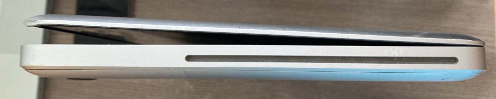
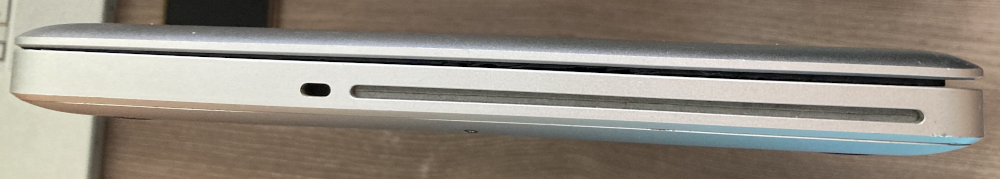
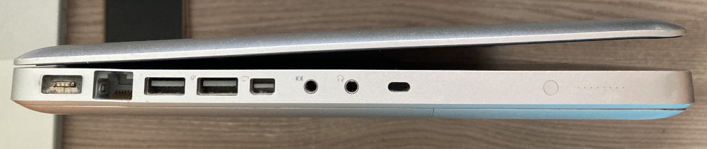
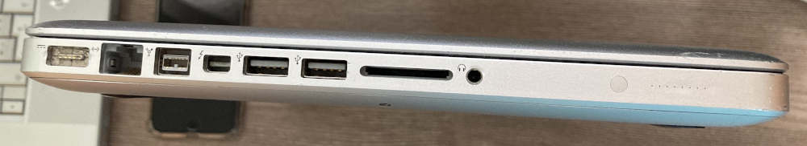
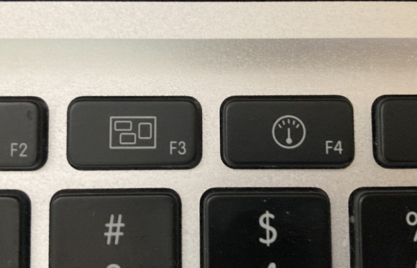
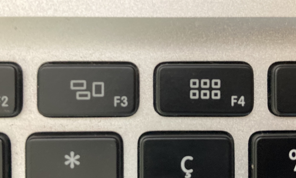

Photo by Apple
The Unibody MacBooks were introduced in 2008 and made all the way up until 2012, when the last revisions came out. They replaced the older aluminium MacBook Pros with a new and revolutionary design - one that is more durable and easier to service. While they may all look similar, they have completely different internals and some of them should be avoided at all costs.
First of all you need to make sure you have a Unibody machine. There are several other lineups which looks similar but are not the same thing.
What to look for:
- Optical drive - all Unibody MacBooks have an optical drive on the right side.
- No force-click touchpad - it was introduced after they were discontinued with the 2015 MBPs
- Black keyboard - pre-Unibody MBP are all-silver.
- "MacBook Pro"/"MacBook" text under the screen - the Retinas don't have that
Another way is to check the bottom case - it should say the year and model number there. Look for these model numbers - A1278 (13-inch), A1286 (15-inch) and A1297 (17-inch).
After that you have to see which screen size you have. They came in 3 variants - 13, 15 and 17 inches.
13" models are the easiest to identify - they don't have speaker grills on either side of the keyboard.
If you are unsure if you have a 15" or 17" here are some ways to check:
- 15" models have 2 USB ports on the left side, while 17" have 3
- 15" models have an SD card slot, while the 17" have a ExpressCard/34 slot (except the 2008 15" model which also has an ExpressCard slot)
- 17" models always came with a screen resolution of 1920x1200, glossy and matte. 15" never reached that.
- Check your bottom case for the model number - if it's a 15" it should say A1286, and if it's a 17" it should say A1297.
Screen configuration:
15" and 17" MacBook Pros could be configured with an optional anti-glare screen. These screens were matte and on the 15" were higher resolution than the default glossy screen (1440x900 instead of 1680x1050). These anti-glare screens stand out as machines with them had thin silver bezels, much like the pre-Unibody MacBook Pros. While the glossy screens had black bezels.
Year and configuration:
Finally here are some tips on identifying which year your MacBook Pro was made. The easiest way to check is to power it on and look at the processor speed but that isn't always possible. Don't worry, there are other ways.
Late 2008 MacBook (A1278):

This is an odd one - Apple introduced this aluminium MacBook in Late 2008 and made it for only one year. Up until now MacBooks were made from plastic, and after this one they returned to that, with this design becoming the 13" MacBook Pro. Other than that, it's a very reliable machine.
Here are some characteristics that differentiate it from the rest:
- Bezel says MacBook, not MacBook Pro (it is possible for it to have the latter if your machine has had a display assembly replacement from a MBP)
- No FireWire 800 port or SD card slot - all of the 13" MacBook Pros have both
- Kensington lock is on the left side, rather than the right - this is a small one but all of the MacBook Pros had the Kensington lock next to the optical drive.
- No backlit keyboard - this was only the case on the lower spec model that had a 2 GHz Core 2 Duo. The 2.4 GHz had a backlit keyboard.
- Hatch door on the bottom - this machine has a little door that gives you access to the storage and battery (both are removable) and can be opened with a small flush lever above it.
Here are some pictures comparing them (first pic of each side is a 2008, second is a 2011 MBP):
   13" MacBook Pro (A1278):
Introduced in 2009, it was made until 2012 and was refreshed pretty often. The first models came with a Core 2 Duo, until Early 2011, when they were upgraded with a second generation Intel Core i5 or i7. All of the 13-inch models are reliable and generally don't have any issues. I highly recommend them.
2009
- Came with a 2.26 or 2.53 GHz Core 2 Duo
2010
- Came with a 2.4 GHz or 2.66 GHz Core 2 Duo, can be upgraded to 16 GB of RAM, unlike the 15 and 17 inch models from that year.
2011
In 2011 they made some differences to the machine. It now has a slightly different keyboard layout, compared to the previous ones. Also the mini-Display port was replaced with a Thunderbolt port. You can see which one you have by looking at the symbol next to the port.
2008 to 2010:
2011 and 2012:
The symbols on the F3 and F4 keys are different. This applies for the 15-inch and 17-inch models as well.
Early 2011 - 2.3 GHz Core i5 or 2.7 GHz Core i7, can only take 8 GB of RAM
Late 2011 - 2.4 GHz Core i5 or 2.8 GHz Core i7, can take 16 GB of RAM again
2012
- 2.5 GHz Core i5 or 2.9 Core i7
This model has a newer Bluetooth card and can work with Apple's AirDrop feature.
15" MacBook Pro (A1286):
Made from 2008 to 2012. These models went through a bit of change, for better or worse.
Caution: Avoid the 2010 and 2011 models as those have issues I'll list below!
2008
This model is a bit unique - it has some differences that were removed with the later ones:
- Hatch door on the bottom - just like the 2008 MacBook, it has a hatch door that allows you to access its storage and battery.
- ExpressCard/34 slot - it was replaced with an SD card slot in the later models.
- No anti-glare screen configuration - the matte screen wasn't available with this one.
It came with a 2.4, 2.53, 2.8 or 2.93 GHz Core 2 Duo (the latter two were optional configurations)
2009
Came with a 2.53, 2.6, 2.8 or 3.06 GHz Core 2 Duo.
The hatch door was removed on this one and the ExpressCard slot was replaced with an SD card slot.
2010
The 2010 models have a widespread issue with the video circuitry that results in kernel panics. It is not an issue with the GPU itself but rather a capacitor.
Dosdude1 has a great video about it.These models came with a 2.4 or 2.53 Core i5 or 2.66 or 2.8 Core i7
2011
The 2011s are infamous for their widespread GPU failures. Basically the dedicated GPU chip dies and you are left with either replacing it (which isn't a good idea because it will fail again) or using only the integrated Intel HD 3000 graphics. AMD never came with a revised version of the GPU, unlike NVIDIA with the GeForce 8600M GT, so replacing it is pointless.
These models came with an updated keyboard layout, different to the previous ones and a Thunderbolt port. (Refer to the 13" 2011 model for more info)
Early 2011 CPU options were 2.0, 2.2 or 2.3 GHz Core i7.
Late 2011 were 2.2, 2.4 or 2.5 GHz Core i7
2012
The last revision of these came in 2012 and unlike the previous year, didn't have any issues. These models are sought-after due to being the fastest Unibody MacBooks you can get.
CPU options were 2.3, 2.6 or 2.7 GHz Core i7
17" MacBook Pro (A1297):
These didn't get as many refreshes and honestly feel kinda like an afterthought which is a shame as they are the most powerful and have the best screens from all of the sizes. In 2012 they completely dropped the 17-inch size and only refreshed the 13 and 15-inch models.
2009
The Early and Mid 2009 models are pretty much the same on the outside but they have different specs - faster CPU options and more VRAM.
Early 2009 - 2.66 or 2.93 GHz Core 2 Duo
Mid 2009 - 2.8 or 3.06 GHz Core 2 Duo
2010
These suffer from the same issue as the 15-inch from the same year which you can read about above.
CPU options were 2.53 Core i5 or 2.8 Core i7
2011
These suffer from the same issue as the 15-inch from the same year which you can read about above. I can't recommend them as much as I wish I could.
These models came with an updated keyboard layout, different to the previous ones and a Thunderbolt port. (Refer to the 13" 2011 model for more info)
Early 2011 - 2.2 or 2.3 GHz Core i7
Late 2011 - 2.4 or 2.5 GHz Core i7


{kind=link}
{kind=link}
{kind=link}